A modern, fully configurable backend for Odoo 18 Community: four navigation modes, an app drawer, global search, bookmarks, a real dark mode, color palettes, split view and branded login pages.
by DevsCodespace · Author: Ankit
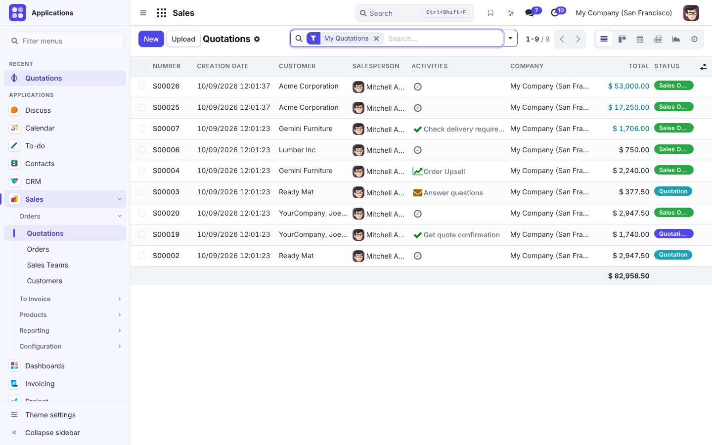
Expanded, mini or collapsed; locked or expanding on hover; on the left or the right; light, tinted or dark ink.
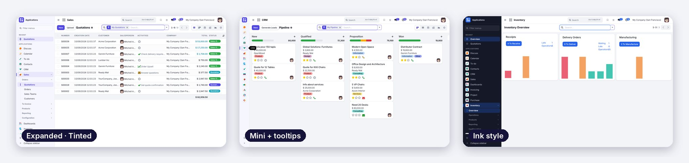
The launcher searches apps and menus together, remembers what you used recently and lets you pin favorites.
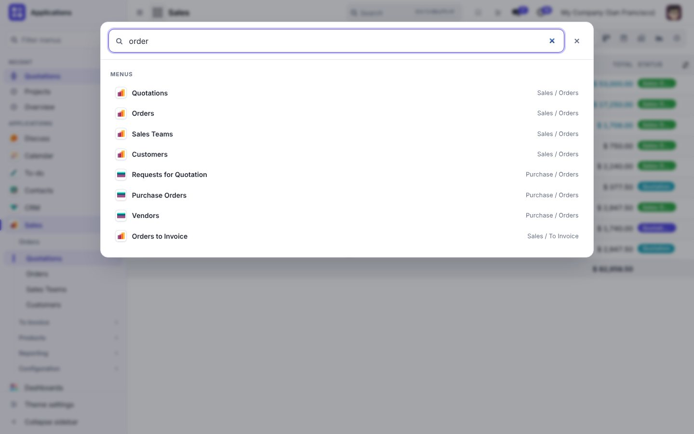
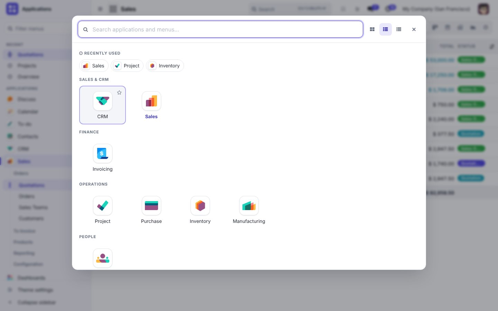
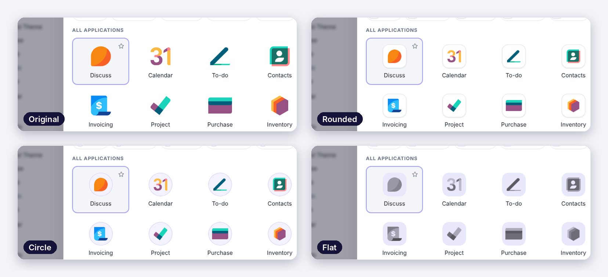
A command-palette style search over apps, menus and bookmarks, with fuzzy matching, recent searches and suggestions.
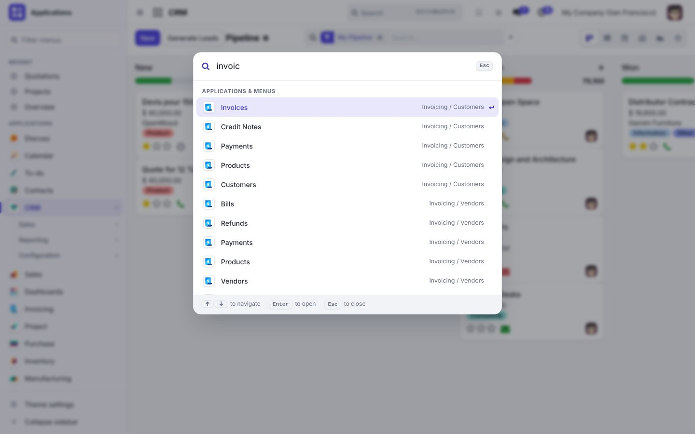
Save menus, filtered views or individual records, then rename and reorder them. Bookmarks are stored on the server, so they follow you to every device.
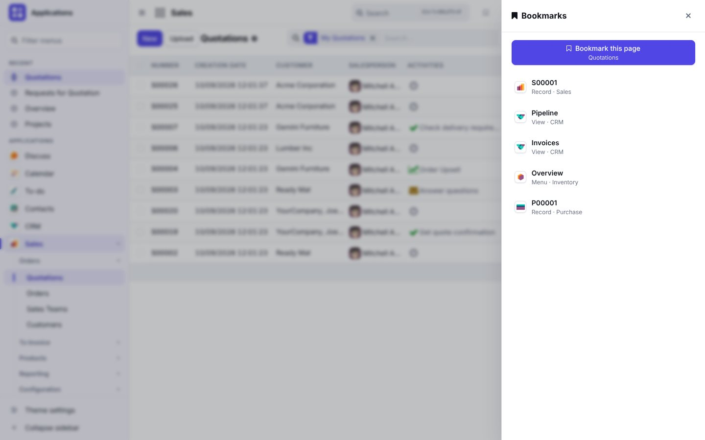
Dark mode is a separately compiled theme with its own palette, not a CSS filter. It covers every standard view, dialogs, dropdowns, date pickers, chatter and the theme's own panels.
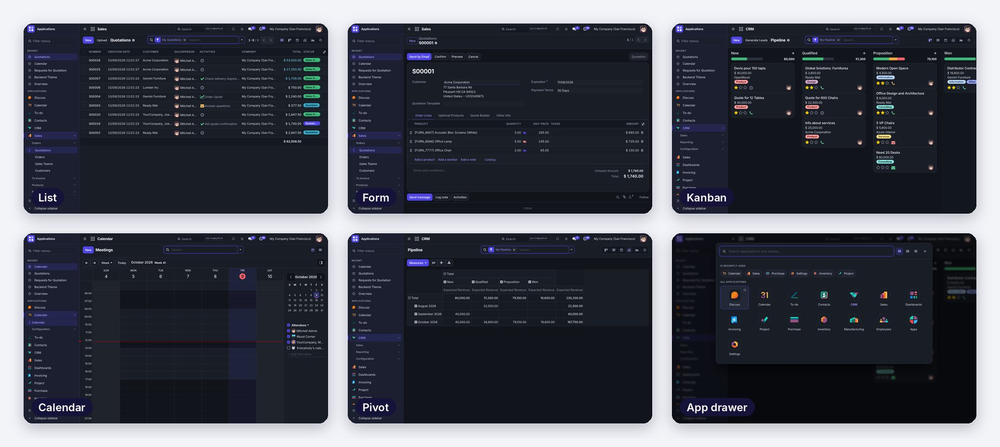
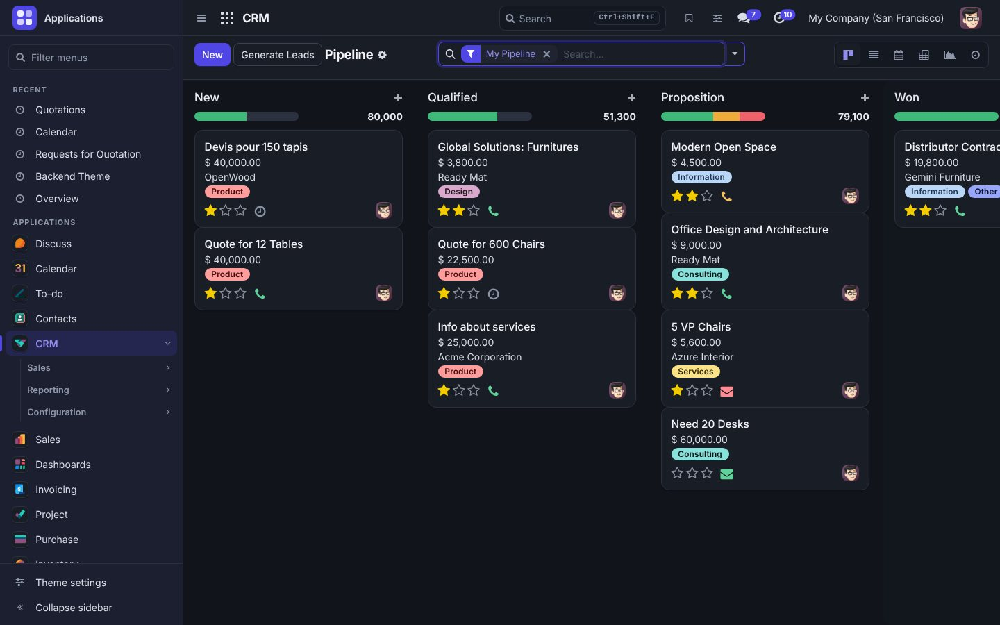
Eight curated palettes plus a custom color picker. Text on the primary color is chosen automatically for contrast. Every option applies instantly, with no page reload.
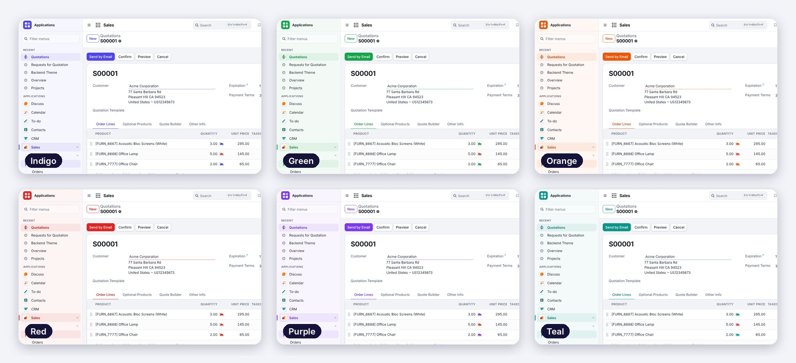
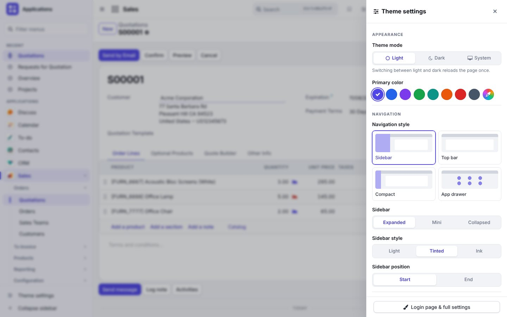
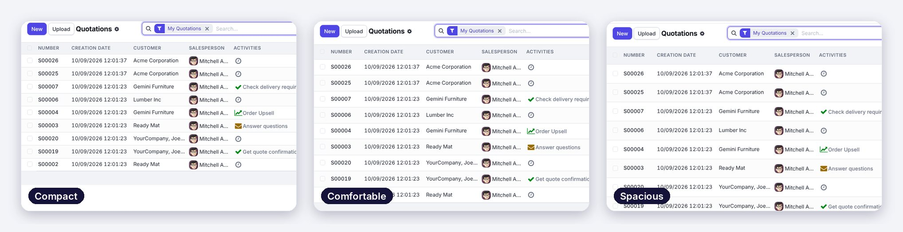
Cleaner control panel, pill status bar, notebook tabs, sticky list headers, hover and selection states, modern kanban cards and a restyled chatter, without changing any business logic.
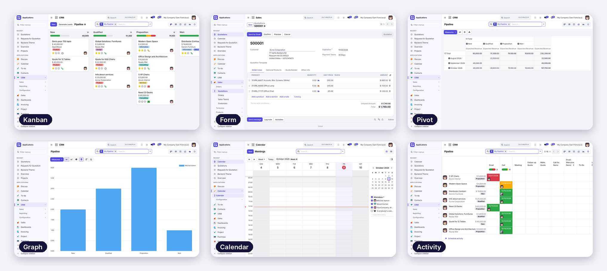
Turn on split view to open records next to the list. Changes are saved automatically when you switch rows, close the pane or leave the screen, exactly like a normal form.
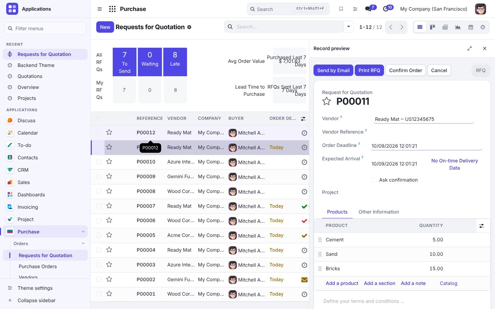
Automatic mode places the chatter beside the form when there is room (taking the sidebar into account) and below it otherwise. You can also force it to the side or the bottom.
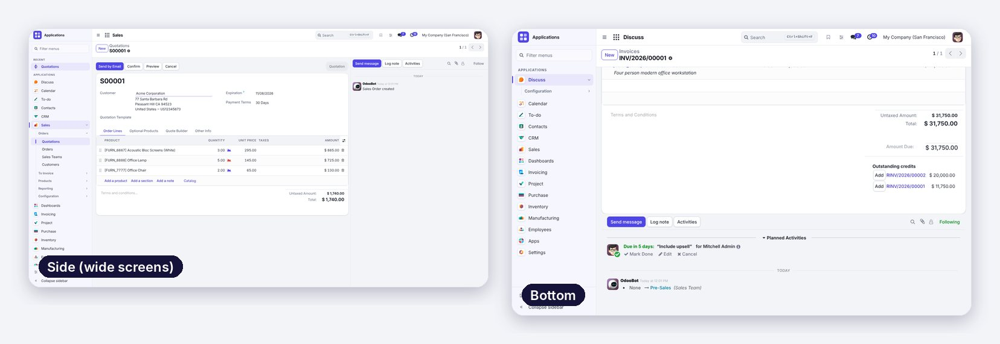
Users manage their personal preferences. Administrators also brand the login page for the whole database.
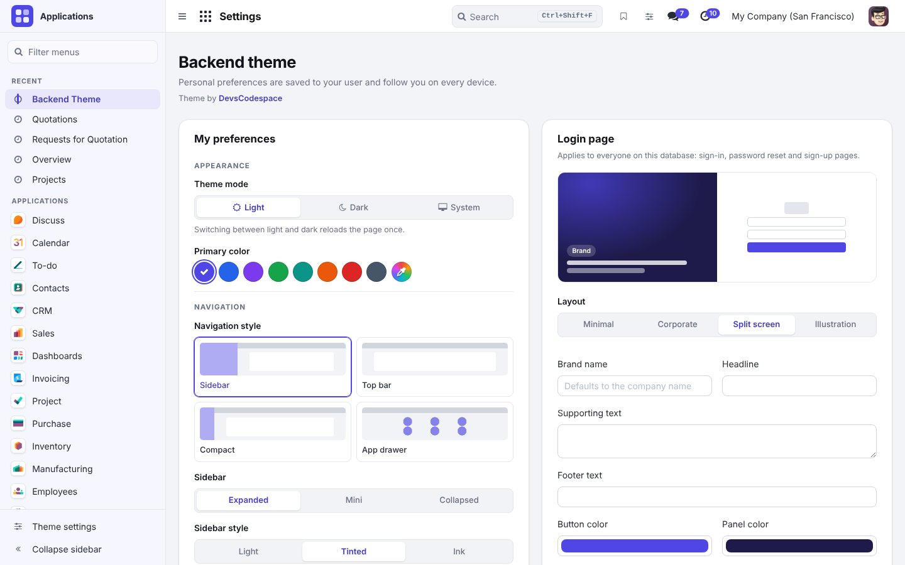
Choose between four layouts and set the logo, background (gradient, color or image), colors, brand name, headline, text and footer.
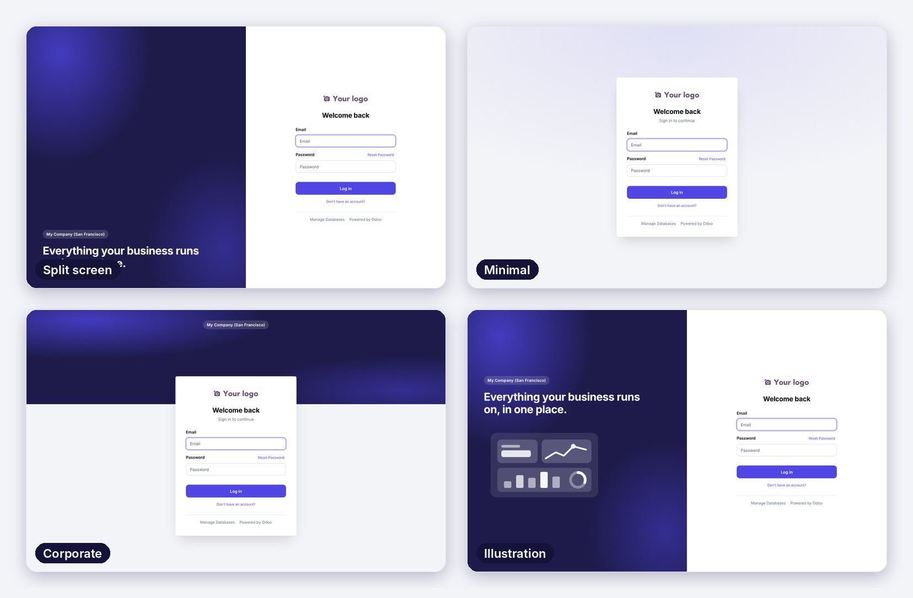
Built with logical CSS properties, so Arabic, Hebrew and Persian get a correctly mirrored layout, not a flipped page.
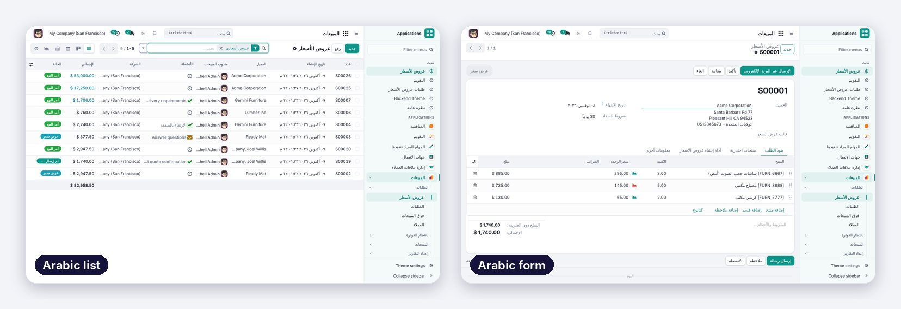
On phones the theme steps aside and keeps Odoo's own mobile navigation, with the theme's colors and polish.
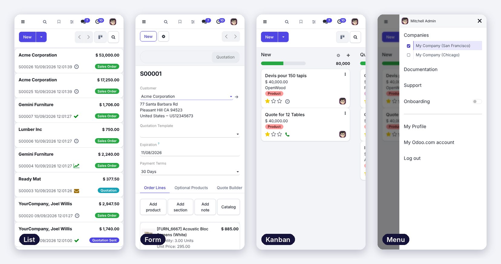
patch() callsres.users.settings, delivered with the session (no extra request at startup)web and mail; no Enterprise codeOdoo 18.0 Community Edition. Tested with Sales, CRM, Inventory, Purchase, Invoicing/Accounting, Manufacturing, Project, Employees, Contacts, Calendar, Discuss and Settings, in list, form, kanban, calendar, pivot, graph and activity views.
Uninstall any other backend theme before installing this one.
DevsCodespace builds business automation with Odoo and Django: custom modules, ERP automation, data migration, integrations and AWS hosting.
Contact DevsCodespace